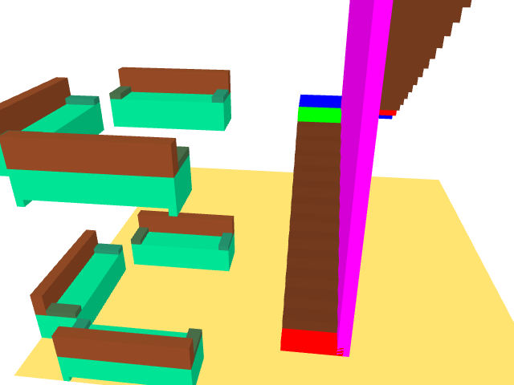

Blockaid reads in a file containing regular FDS &keywords plus additional keywords, &BGRP, &EGRP, &GRP and &INCL, known only to Blockaid. It uses these keywords to output an FDS input file where specified groups of blockages, holes and vents are replicated, translated and/or rotated.
blockaid is run at a command line and has the following usage:
blockaid [-f] [-h] [-l libpath] casename
-f - overwrite output file casename.fds
-h - display this message
-l libdir - optional directory path containing &INCL files
where casename is the name of the input file to be converted. By convension this file has an extension .fof.
&BGRP ID='group label' /
one or more &OBST, &VENT, &HOLE or &GRP lines
&EGRP /
Example: blockaid converts the following line
&OBST XB=0.0,2.0, 0.0,0.4, 0.0,0.1 COPIES=3 DXYZ=0.0,0.0, 0.3, 0.3, 0.1,0.1 /to
&OBST XB=0.0,2.0, 0.0,0.4, 0.0,0.1 / &OBST XB=0.0, 2.0, 0.0, 0.4, 0.0, 0.1 / &OBST XB=0.0, 2.0, 0.3, 0.7, 0.1, 0.2 /Note that blockaid removes the COPIES and DXYZ keywords.
&SHELL XB=xmin,xmax,ymin,ymax,zmin,zmax DELTA=del ..... /into an &OBST and &HOLE line given by:
&OBST XB=xmin,xmax,ymin,ymax,zmin,zmax ..... / &HOLE XB=xmin+del,xmax-del,ymin+del,ymax-del,zmin+del,zmin-del /

&BGRP ID='COUCH' ORIGIN=3.0,3.0,0.0 / &OBST XB= 3.0, 5.0, 3.5, 3.7, 0.5, 0.9 , RGB=128, 64, 32 / &OBST XB= 3.0, 3.2, 3.0, 3.5, 0.5, 0.6 , RGB= 64, 96, 64 / &OBST XB= 4.8, 5.0, 3.0, 3.5, 0.5, 0.6 , RGB= 32,128, 96 / &OBST XB= 3.0, 5.0, 3.0, 3.7, 0.0, 0.5 , RGB= 0,196,128 / &HOLE XB= 3.2, 4.8, 3.2, 3.5, 0.0, 0.4 / &HOLE XB= 3.1, 4.9, 3.5, 3.7, 0.0, 0.1 / &EGRP /
A group of three couches defining a living room arrangement with a default origin of ORIGIN=0.0,0.0,0.0:
&BGRP ID='LIVE1' ORIGIN=0.0,0.0,0.0 / &GRP ID='COUCH' XYZ=0.8, 0.0,0.0 ROTATE=180.0 / &GRP ID='COUCH' XYZ=0.0, 0.8,0.0 ROTATE=90.0 / &GRP ID='COUCH' XYZ=0.8, 3.0,0.0 ROTATE=0.0 / &EGRP /
The &OBST and &HOLE keywords used by FDS to define couches in 4 living room arrangements are expanded using:
&GRP ID='LIVE1' XYZ=0.0,0.0,0.0 ROTATE=0.0 / &GRP ID='LIVE1' XYZ=4.5,0.0,0.0 ROTATE=90.0 / &GRP ID='LIVE1' XYZ=4.5,4.5 0.0 ROTATE=180.0 / &GRP ID='LIVE1' XYZ=0.0,4.5,0.0 ROTATE=270.0 /
This example may be generated by downloading blockaid1.fof and typing the following at a command line:
blockaid blockaid1 fds5 blockaid1.fds smokeview blockaid1
Group of blockages to define a set of stairs for one half of a building story:
&BGRP ID='STAIRS' / &OBST XB= 0.0, 1.0, 0.0, 0.4, 0.0, 0.2 , COLOR='RED' / &OBST XB= 0.0, 1.0, 0.3, 0.7, 0.2, 0.4 , RGB=100,50,25/ &OBST XB= 0.0, 1.0, 0.6, 1.0, 0.4, 0.6 , RGB=100,50,25/ &OBST XB= 0.0, 1.0, 0.9, 1.3, 0.6, 0.8 , RGB=100,50,25/ &OBST XB= 0.0, 1.0, 1.2, 1.6, 0.8, 1.0 , RGB=100,50,25/ &OBST XB= 0.0, 1.0, 1.5, 1.9, 1.0, 1.2 , RGB=100,50,25/ &OBST XB= 0.0, 1.0, 1.8, 2.2, 1.2, 1.4 , RGB=100,50,25/ &OBST XB= 0.0, 1.0, 2.1, 2.5, 1.4, 1.6 , RGB=100,50,25/ &OBST XB= 0.0, 1.0, 2.4, 2.8, 1.6, 1.8 , RGB=100,50,25/ &OBST XB= 0.0, 1.0, 2.7, 3.1, 1.8, 2.0 , RGB=100,50,25/ &OBST XB= 0.0, 1.0, 3.0, 3.4, 2.0, 2.2 , RGB=100,50,25/ &OBST XB= 0.0, 1.0, 3.3, 3.7, 2.2, 2.4 , RGB=100,50,25/ &OBST XB= 0.0, 1.0, 3.6, 4.0, 2.4, 2.6 , RGB=100,50,25/ &OBST XB= 0.9, 1.1, 0.0, 4.3, 0.0, 2.8 , COLOR='MAGENTA' / &OBST XB= 0.0, 1.0, 3.9, 4.3, 2.6, 2.8 , COLOR='GREEN' / &OBST XB= 0.0, 2.0, 4.3, 5.3, 2.6, 2.8 , COLOR='BLUE' / &EGRP /
Combine two sets of half stairs to form a full set of stairs:
&BGRP ID='FULLSTAIRS' / &GRP ID='STAIRS' XYZ=0.0,0.0,0.0 / &GRP ID='STAIRS' XYZ=0.0,-1.0,2.8 ROTATE=180.0 / &EGRP /
The &OBST keywords used by FDS to define the half-set, full-set and three story set stairs are expanded by Blockaid using:
&GRP ID='STAIRS' XYZ=0.0,1.0,0.0 / &GRP ID='FULLSTAIRS' XYZ=2.2,1.0,0.0 / &GRP ID='FULLSTAIRS' XYZ=4.4,1.0,0.0 / &GRP ID='FULLSTAIRS' XYZ=4.4,1.0,5.6 / &GRP ID='FULLSTAIRS' XYZ=4.4,1.0,11.2 /
This example may be generated by downloading blockaid2.fof and typing the following at a command line:
blockaid blockaid2 fds5 blockaid2.fds smokeview blockaid2
&BGRP ID='COUCH' ORIGIN=3.0,3.0,0.0 #COLOR='196, 0, 0' / &OBST XB= 3.0, 5.0, 3.5, 3.7, 0.5, 0.9 , RGB=#COLOR / &OBST XB= 3.0, 3.2, 3.0, 3.5, 0.5, 0.6 , RGB=#COLOR / &OBST XB= 4.8, 5.0, 3.0, 3.5, 0.5, 0.6 , RGB=#COLOR / &OBST XB= 3.0, 5.0, 3.0, 3.7, 0.0, 0.5 , RGB=#COLOR / &HOLE XB= 3.2, 4.8, 3.2, 3.5, 0.0, 0.4 / &HOLE XB= 3.1, 4.9, 3.5, 3.7, 0.0, 0.1 / &EGRP /
Expand the group:
&GRP ID='COUCH' XYZ=0.0, 0.0,0.0 / Use default color given on &BGRP line &GRP ID='COUCH' XYZ=0.0, 2.0,0.0 #COLOR='0, 196, 0' / Override default color &GRP ID='COUCH' XYZ=0.0, 4.0,0.0 #COLOR='0, 0, 196'/ Override default color
&OBST XB= 3.0, 5.0, 3.5, 3.7, 0.5, 0.9 , RGB=0, 196, 0 / &OBST XB= 3.0, 3.2, 3.0, 3.5, 0.5, 0.6 , RGB=0, 196, 0 / &OBST XB= 4.8, 5.0, 3.0, 3.5, 0.5, 0.6 , RGB=0, 196, 0 / &OBST XB= 3.0, 5.0, 3.0, 3.7, 0.0, 0.5 , RGB=0, 196, 0 / &HOLE XB= 3.2, 4.8, 3.2, 3.5, 0.0, 0.4 / &HOLE XB= 3.1, 4.9, 3.5, 3.7, 0.0, 0.1 /
This example may be generated by downloading blockaid3.fof and typing the following at a command line:
blockaid blockaid3 fds5 blockaid3.fds smokeview blockaid3